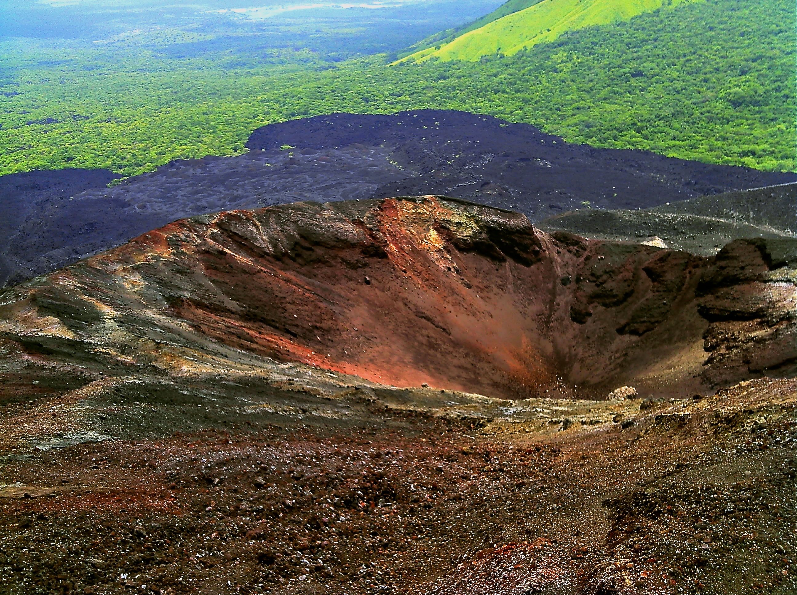

America del Norte:

El Gran Cañón es un valle fluvial en la meseta de Colorado que expone estratos proterozoicos y paleozoicos elevados, y es también una de las seis secciones fisiográficas distintas de la provincia de la meseta de Colorado. Aunque no es el cañón más profundo del mundo ( Kali Gandaki Gorge en Nepal es mucho más profundo), el Gran Cañón es conocido por su tamaño visualmente abrumador y su paisaje intrincado y colorido. Geológicamente, es importante debido a la gruesa secuencia de rocas antiguas que están bien conservadas y expuestas en las paredes del cañón. Estas capas de roca registran gran parte de la historia geológica temprana del continente norteamericano.
America Central:
Cerro Negro es un volcán activo en la Cordillera de los Maribios en Nicaragua, a unos 10 km (6,2 millas) del pueblo de Malpaisillo. Es un volcán muy nuevo, el más joven de América Central, que apareció por primera vez en abril de 1850. Consiste en un cono de ceniza basáltica de grava, que contrasta mucho con las verdes laderas circundantes, y da origen a su nombre, que significa Cerro Negro. Cerro Negro ha entrado en erupción con frecuencia desde su primera erupción. Un aspecto inusual de varias erupciones ha sido la emisión de ceniza desde la parte superior del cono, mientras que la lavabrota de fracturas en la base.
America del Sur:

Machu Picchu es una ciudadela inca del siglo XV ubicada en la Cordillera Oriental del sur de Perú en una cadena montañosa de 2430 metros (7970 pies). Está ubicado en el distrito de Machupicchu dentro de la provincia de Urubamba sobre el Valle Sagrado, que se encuentra a 80 kilómetros (50 millas) al noroeste de Cusco. El río Urubamba pasa por allí, atravesando la Cordillera y creando un cañón con un clima tropical de montaña.
Caribe:
Punta Cana es una ciudad turística en la región más oriental de la República Dominicana.
Forma parte del distrito municipal Verón-Punta Cana , en el municipio Higüey de la provincia de La Altagracia.
Según el censo de 2010, este distrito tenía una población de 43.982 habitantes.
Punta Cana es el segundo destino turístico más popular de América Latina,
con más visitantes que cualquier otra ciudad de la región del Caribe